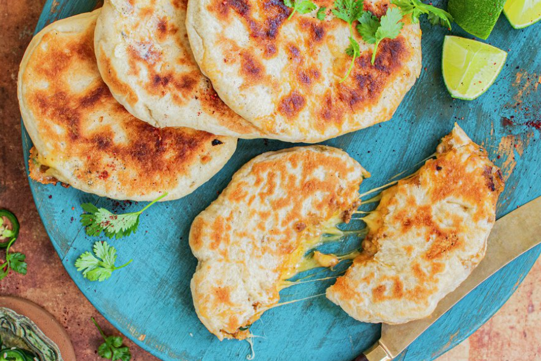

antall porsjoner:
Til deigen
1. Fres opp kjøttdeig sammen med olje eller smør. Ha i vann og tacokrydder og kok i 5 minutter. Bruk en stekespade og bland godt.
2. Lag deigen: start med å blande sammen det tørre. Spe med vann og elt til deigen er glatt, smidig og slipper kanten av bollen. Dekk til bollen og la deigen heve i 30 minutter.
3. Del opp deigen i mindre emner, og form emnene til små boller. Kjevle de litt ut. Bruk litt mel til utbaking, hvis det trengs.
4. Fyll bollene med kjøttdeig, revet ost og hakka grønn chili. Klem de godt igjen, og kjevle de til små litt flate brød. Stek i en panne på begge sider, til bollene er gylne og deigen er stekt.